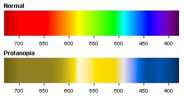

|
La protanopia es cuando no existen los conos rojos,
responsables de las frecuencias más bajas en el espectro de luz visual. |
 |
A aquellos con daltonismo afectando a los conos rojos, se les refiere como protanes. Estos tienen dificultades para distinguir entre el azul y el verde, así como entre el rojo y el verde. Al comparar ambos espectros, se observa que existen diferentes colores y matices que son difíciles de distinguir para una persona protanópica. Por lo tanto, estas personas no solo son ciegas a los colores rojo y verde, sino a muchos más. Esto significa que el conocido término "daltonismo rojo-verde" es engañoso y da una impresión errónea de daltonismo protan (y también de daltonismo deután).
Este grupo de daltonismo es de los más comunes, detrás de la deuteranopia. Con los siguientes porcentajes de la población afectada:
| Genero | Protanopia | Protanomalía |
| Masculino | 1.01% | 1.08% |
| Femenino | 0.02% | 0.03% |
Lea sobre los demás tipos de daltonismo: Deuteranopia, Tritanopia y Monocromatismo.